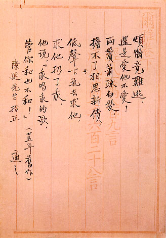

義助慰安婦
—— 李敖百件珍藏義賣藝術品（第91件）
品 名： I4. 胡適情詩 預估價： 50 萬 成交價： 50 萬 說 明： 胡適，美國哥倫比亞大學博士。早期中國留學生出國後多休妻再娶，胡適回國後卻仍和鄉下纏小腳的姑娘結婚，胡夫人江冬秀是位粗線條的村婦，為恐胡先生變心，曾拿菜刀威脅他，所以他的婚姻一直維持至死。他一生中僅有一次婚外情，就是在杭州和一位曹女士，他寫過不少情詩給這位婚外的情人，目前義賣的這首就是其中之一。胡適先生當時給北大政治系教授張慰慈寫了一個扇面：「愛情的代價是痛苦，愛情的方法是忍受痛苦。」可見他為村婦所苦的隱慟。
